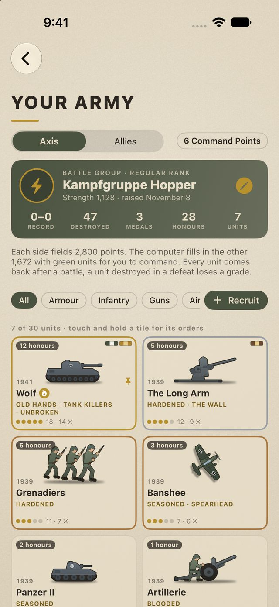
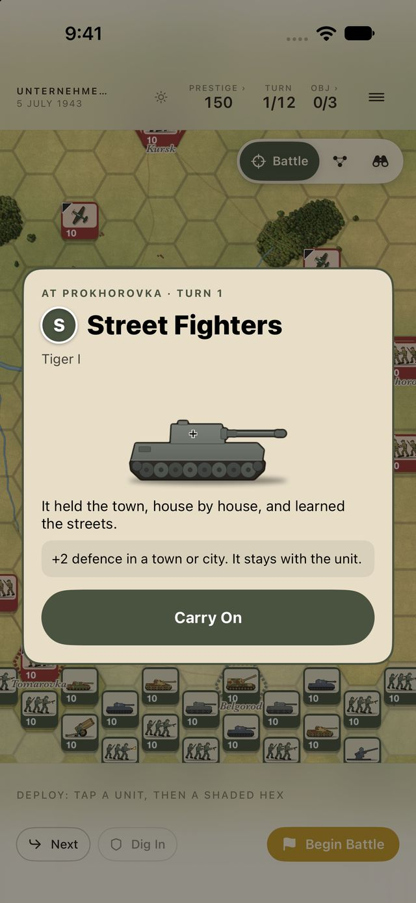

An army that remembers
Name them. Paint them.
Bring them home.
Your units travel with you from battle to battle and grow from Green recruits to Guards. They win medals with lasting bonuses, from the Iron Cross to the Victoria Cross, and earn traits from what they live through.
Every unit keeps a service record. The fallen go on the Roll of Honour. Win a campaign and your army marches in a victory parade.

